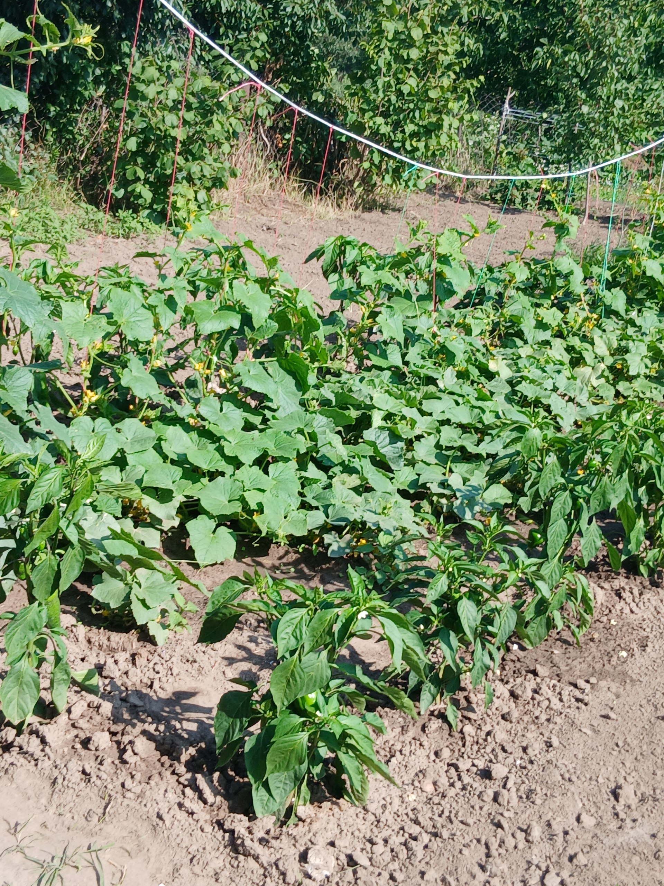
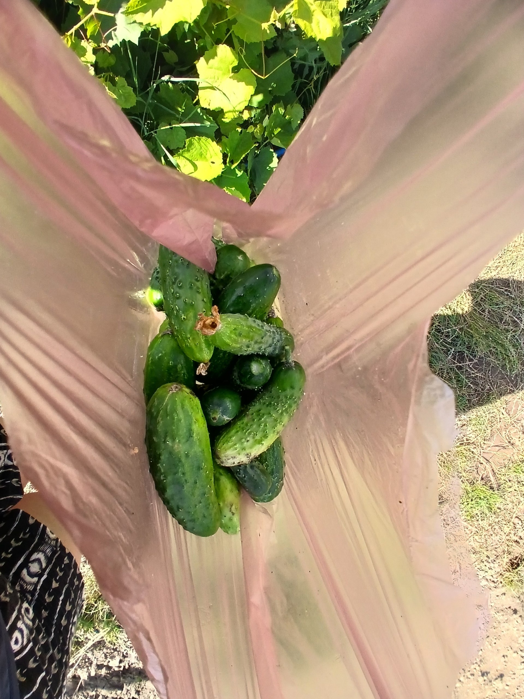
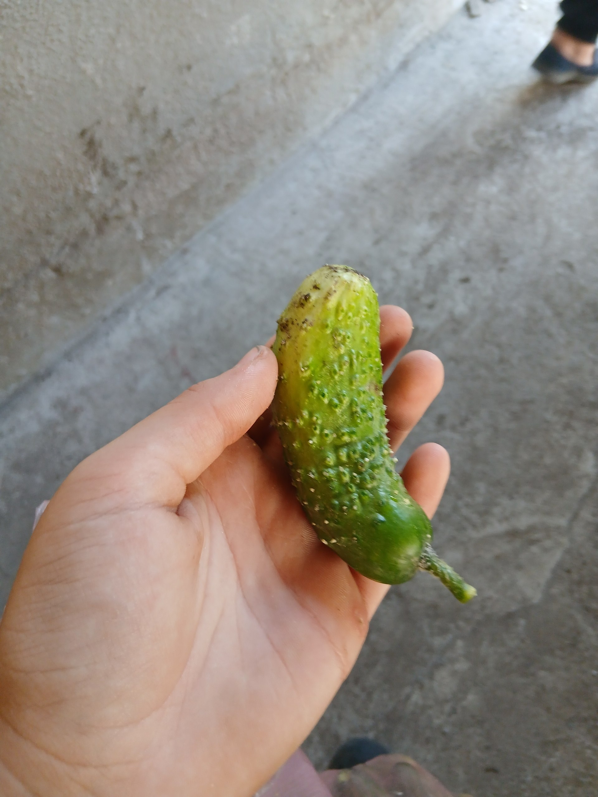

Як виростити справжній
Огірковий Шедевр
Практичний щоденник та яскравий звіт про те, як огірки росли та набиралися сили до 25 липня, дарували соковитий хрускіт і стали стратегічним запасом із 4 банок на зиму!

Шпалерний догляд та зелені джунглі
Секрет успіху починався з правильної агротехніки. Огірки не стелилися по землі, а охайно тягнулися догори по спеціально натягнутих шпалерних шнурах (як чудово видно на фото!).
- Вертикальне плетиво: рослини отримували максимум літнього сонця та вільного провітрювання, що захистило їх від хвороб.
- Полив теплою водою: щовечора після спадання спеки, щоб огірочки ніколи не були гіркими.
- Органічне підживлення: тільки натуральні компоненти для 100% екологічно чистого врожаю.
Тріумф 25 липня: Повний пакет свіжих огірочків!
25 липня настав кульмінаційний момент усього літнього сезону! Кущі віддячили рясним, щільним та неймовірно красивим врожаєм.
- Щедрий кошик: цілий великий пакет пружних, пухирчастих огірків насиченого смарагдового кольору.
- Ідеальний калібр: не перерослі, корнішонного типу, з яскравими жовтими квіточками на кінчиках.
- Справжня гордість: результат праці учениці 7-Б класу перевищив усі очікування родини!


«Частину з'їла одразу!»: Найсмачніший момент
Хіба можна втриматися, коли в руках тримаєш щойно зірваний прохолодний огірочок, вкритий дрібними ніжними шипами? Перша частина зібраного врожаю пішла на свіжий літній салат та миттєве смакування!
- Соковитість: огірок бризкає соком при першому ж укусі.
- Жодної краплі гіркоти: завдяки регулярному вечірньому зволоженню земля не пересихала.
- Вітамінний заряд: вітаміни C, K, калій та клітковина прямо з власного еко-городу.
4 Банки на зиму: Золотий запас Аліни
Увесь залишок добірного врожаю після дегустації було вирішено законсервувати! Рівно 4 фірмові банки із хрустким секретом та прянощами готові зігрівати теплом літа в холодні зимові дні. Натисніть на будь-яку банку, щоб відкрити її таємний рецепт!
Хрумка Класика
Фірмове 2-годинне крижане замочування перед закруткою для неперевершеної пружності.
Пряний Корнішон
Пікантні міні-огірочки з вишуканими зернятами гірчиці для святкового столу.
Бабусине Золото
Родинна мудрість: дубовий лист дає міцність, а щедрий часник — духмяний аромат.
Новорічний Тріумф 7-Б
Запечатано з інструкцією: відкрити строго під новорічну ялинку та бій годинника!
Щоденник спостережень юного агронома
Підготовка пухкого родючого ґрунту, замочування насіння, перші зелені паростки.
Натягування опорних шнурів, напрямок росту пагонів, регулярний вечірній полив.
Поява яскравих жовтих квіток, активне формування пухирчастих зав'язей.
Збір повного пакета огірків, смачна дегустація та стерилізація 4 банок на зиму!
Учениця 7-Б класу успішно довела на практиці: дбайливий догляд, шпалерне вирощування та любов до природи дають неперевершений результат — соковитий літній врожай та 4 банки хрумкої консервації на всю зиму!